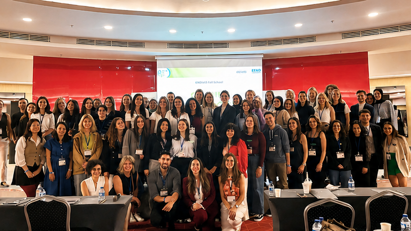
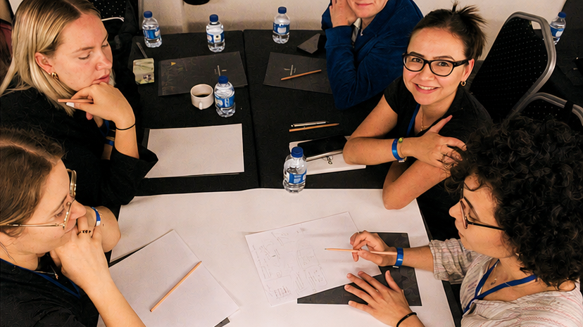
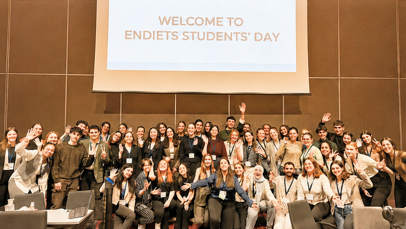
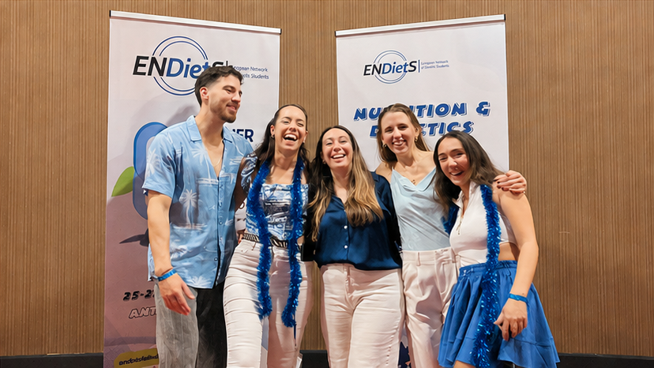

Hard Skills
Practical knowledge
Technical and scientific learning opportunities designed to complement formal education and support future practice in nutrition and dietetics.
Gather to Nourish Schools
Gather to Nourish Schools are student-centred ENDietS events created to bring nutrition and dietetics students and recent graduates together for learning, connection and professional growth.
ENDietS has traditionally organised in-person student activities alongside the biennial EFAD Congress. However, meeting only once every two years is not enough to build the lasting connections and shared learning experiences that students value.
This inspired the creation of the ENDietS Gather to Nourish Fall School: a unique opportunity combining education, discussion, hands-on workshops, networking and social activities to help nutrition and dietetics students build confidence, develop practical skills and prepare for their future careers, together.
Following the success of the first Fall School in Antalya, Türkiye, in 2024, the 2026 edition will bring students from across Europe together in Thessaloniki, Greece, to learn, exchange experiences and become part of a vibrant international community.
Participants will also have the opportunity to attend the 3rd International Conference of Nutritional Sciences and Dietetics (ICONSD2026), taking place alongside the Fall School and further enriching its scientific programme.
The Fall School pillars
Hard Skills
Technical and scientific learning opportunities designed to complement formal education and support future practice in nutrition and dietetics.
Soft Skills
Workshops and discussions that help students strengthen communication, teamwork, leadership and other skills needed beyond the classroom.
Social & Networking Moments
Informal activities and shared experiences that help participants meet peers, build friendships and feel part of the ENDietS community.
ENDietS moments

Antalya, Türkiye · 2024

Interactive sessions designed to strengthen practical knowledge and build confidence.

Malmö, Sweden · 2025

Social moments that help participants feel welcomed, connected and part of the community.